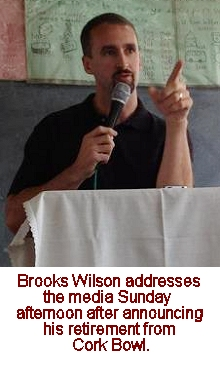
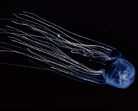
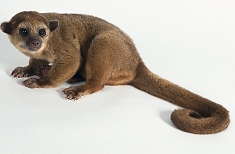
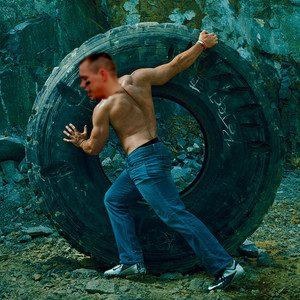

The Latest Headlines from Cork
Bowl 22
Brooks Wilson Announces
Retirement After 13 Year Career
August 26th - All good things must come to an end....and so
must the career of one of Cork Bowl's all-time greats. After a standout
13-year career, one of the founding fathers of Cork Bowl, Brooks Wilson,
is calling it quits. "After last year's beating and accompanying
migraine, I think my body is screaming its answer about playing again,"
stated Wilson in a Sunday afternoon press conference. "After dominating
the game for decades it's time for me to let others have a chance. My
cheapshots over the years have come back to haunt me. All the extra
effort in late hits,  low
blows and general cheapness has worn me out faster than expected. My
heart is still in it, but my body is not."
Wilson is one of the few "founding fathers" remaining that
appeared in the first year of Cork Bowl in 1991. He played in each of
the first five Cork Bowls before taking a long hiatus and then returning
to the game in Cork Bowl 13. For the next eight years, Wilson put up
one of the most impressive runs in Cork Bowl history as he totaled 132
receptions (16.5 per year) and 54 touchdowns (6.8 per year). He recorded
19 or more receptions three times including a career high 22 in Cork
Bowl 19 that included a Cork Bowl single-game record 10 touchdowns.
He received his only MVP award that season as he led his Fossas to a
154-140 win. Wilson finishes his career with 159 receptions ranking
him third on the all-time list. He also had 58 touchdown receptions
which is fourth all-time.
While he put up impressive offensive numbers, it was his defensive cheapshots
that he will be most famous for. "His career reminds me a lot of
Bill Buckner in some ways," remarked long-time teammate Willy Truitt.
"Buckner played 20 years in the majors and hit almost .300 for
his career but the only thing people remember is the botched grounder
in the World Series. Wilson played 13 years in Cork Bowl and put up
some phenomenal statistics, but ten years from now the next generation
will only remember his late hits and push-offs. It's kind of depressing
when that's going to be the legacy he leaves behind."
While Wilson has publicly stated his age and overall wear and tear to
his body were the reasons behind his surprising retirement announcement,
others in the league aren't buying it - first and foremost being former
classmate Chris Cork. "Over a decade ago, Brooks and I decided
we would have a competition to come up with the best fake injury that
would eventually lead to our retirement," commented Cork. "After
(Brian) Garrard called it quits with a chipped tooth, we both knew we
could do better. I'm still awaiting his 'official' press release to
come out where he says he retired because of his long-term battle with
athlete's foot, or hangnails or uromysitisis. If he doesn't come up
with something good I'll be gravely disappointed in him....which wouldn't
be the first time that's happened either. Wearing down from giving cheapshots
is a soft excuse. I have received more than two decades of cheapshots
from Wilson (that's a lifetime estimate in the thousands) and there's
no way giving is any more painful than receiving. I'm still playing."
An official announcement from the Cork Bowl front offices has not been
made as to who will replace Wilson in this year's game. "As everyone
knows, the list of players vying to get a shot in Cork Bowl has grown
exponentially over the years," commented Commissioner Patrick Cork.
"We have been in contact with several players and their agents
across the country and we will make the right decision like we always
do. It won't be a knee-jerk reaction to get the first person that comes
to mind. It will be someone that embraces the culture of Cork Bowl and
will play the game the right way. I will tell you that I doubt it will
be a first-time player replacing him. You can read into that however
you want."
back to top
Jeff
Henney Returning to Cork Bowl
September 1st - With the Cork Bowl
fans still buzzing over the shocking retirement of veteran Brooks Wilson,
they were greeted to some exciting news less than a week later. Cork
Bowl great, and fan favorite, Jeff Henney will be making a return to
the field after a two-year absence. Henney, who has been in the far
east for the past few years, will be returning to the United States
this winter. "There are several reasons why I am coming back to
the states, but I'd be lying by saying that Cork Bowl wasn't near the
top of that list," remarked Henney. "When I stepped off the
field after Cork Bowl 19, I knew there was a really good chance that
it would be the last time I played a game at Corklestick Park. Needless
to say, when the opportunity came up for me to play one more game I
jumped all over it."
Henney has been a dominant force from the day he stepped on the field
for his first game in Cork Bowl 11. He dominated both sides of the ball
en route to winning the MVP award in his rookie year. He seemed to only
get better over the years that followed. In the five years he played
the wide receiver position, he averaged 17 receptions and 5 touchdowns
per game. He made the move to quarterback for Cork Bowl 19, and put
up outstanding numbers (52-89, 19 touchdowns), but his team came up
just short. Defensively, Henney was a force intercepting at least one
pass in five of his six career games. Of his 8 career interceptions,
he returned four for touchdowns. With 86 receptions in his career, Henney
needs just 14 to join the "century club" with 100 career grabs.
He currently ranks 7th all time, despite only playing in six games.
After playing two games in Cork Bowl 11 and 12, Henney missed three
Cork Bowls before returning to play in Cork Bowls 16-19. The first game
back after his three year hiatus proved to be one of his best as he
totaled a career-high 22 receptions.
"Obviously we are elated to
have Henney back, especially with the loss of Wilson," commented
Commissioner Patrick Cork. "He epitomizes everything that's great
about Cork Bowl. Not a lot has changed since he's been gone, but I'm
betting it will feel like it's been an eternity when he walks out onto
the field on December 1st. I'm sure it will be very emotional for him."
back to top
Teams Announced
for Cork Bowl 22
September 12th - The
22nd edition of Cork Bowl promises to be another oustanding matchup,
and it will need to be to match last year's thrilling  contest.
Last year's game was decided by just one touchdown, and actually by
just one yard, as the Blobfish held off the Red Pandas with Robert Trimble
being tackled a yard short of the endzone on the last play of the game.
"I know we will be hard-pressed to match what we had last year,"
remarked Commissioner Patrick Cork. "It's not very often you have
a game come down to a final play like that. But I think the teams we
have put together this year give us a shot of a similar ending." contest.
Last year's game was decided by just one touchdown, and actually by
just one yard, as the Blobfish held off the Red Pandas with Robert Trimble
being tackled a yard short of the endzone on the last play of the game.
"I know we will be hard-pressed to match what we had last year,"
remarked Commissioner Patrick Cork. "It's not very often you have
a game come down to a final play like that. But I think the teams we
have put together this year give us a shot of a similar ending."
For the second year in a row, Greg Howard and Willy Truitt will lead
their respective teams at quarterback with Howard leading the Irukandjis
and Truitt leading the Kinkajous. Howard had a somewhat shaky debut
at the position in Cork Bowl 20 throwing 20 touchdown passes, but also
being picked off 4 times. But last year Howard was outstanding completing
44 of 69 passes for 16 touchdowns while only throwing one interception.
He also tacked on two rushing touchdowns and completely negated any
blitzing from the opponent. Howard lost one of his favorite targets
in Brooks Wilson who retired three weeks ago. Wilson will be replaced
by Josh Massey who had a great game in his only contest in Cork Bowl
20. Massey led all rookies that year with 10 receptions and a pair of
touchdowns. Howard will also have an all-time great joining his team
to pick up the slack of Wilson's departure. Jeff Henney, who has spent
the past two years in Laos, will join the Irukandjis. "Henney will
step in and be awesome. There's no doubt about that," commented
Howard. "He's a gamer and I would expect nothing less than at least
a 15/5 game from him. He's not going to travel halfway around the world
to play this game and not be great." Jake Hoalt, fresh off another
great game last season in which he caught 12 passes and scored 8 times,
will also join the Irukandjis as will veterans Josh Williamson and Kevin
Ryan. As most fans will recall, Henney's last Cork Bowl (number 19)
was spent playing quarterback so there is a definite possibility the
Irukandjis will be switching quarterbacks at some point in the game.
Media attempts to see practices have been denied to this point, which
has only fueled the rumors of a Henney/Howard combo at the quarterback
position. "If you think we're giving away our game plan before
the game starts you're crazy," stated Henney. "Show up on
December 1st and find out."
As for the Kinkajous, Willy Truitt will join forces with today's brightest
star, Robert Trimble, for just the second time in the past five years.
The only time Trimble and Truitt have teamed up recently was Cork Bowl
19 when Trimble caught 18 passes and scored 3 touchdowns. "I'm
anxious to see what Trimble can do on my side," said Truitt. "That
speed and size are nearly unstoppable. We're going to have a game plan
that will allow him to take advantage of his unique ability - mainly
being one of the only people playing that's in shape." Along with
Trimble, Truitt will have Patrick Cork on his side for the second year
in a row. Cork and Truitt, who were a dynamic duo in the early years
of Cork Bowl, played together sparingly in recent years, but still have
hooked up 90 times for 36 touchdowns over the past 16 seasons. Patrick
will have brother Chris Cork on his team once again as well. "I
 love
having two options of Chris and Trimble near the endzone," added
Truitt. "They are the two best red zone targets in the game now
that Wilson is gone." The two Evans (Woodard and Barmes) will join
the Kinkajous as well bringing some much needed youth to the squad.
"I think Barmes is due for a breakout game," said Woodard.
"He's had a couple years to get his feet wet and I think the sky
is the limit for him. As for me, I just want to run somebody over. I'm
talking to you Kevin Ryan!"
Cork Bowl 22 will take place on Saturday, December 1st.
back to top
Greg Howard
in Peak Condition for Cork Bowl 22
September 24th - With many of the
Cork Bowl players' bodies deteriorating, several players are trying
to extend their careers by staying in peak physical condition. Robert
Trimble and Jake Hoalt have come to Cork Bowl in great shape the past
few years, but no player has taken the drastic steps Cork Bowl veteran
Greg Howard has taken this offseason. Howard has been working out extensively
since last year's loss with hopes of dominating this year's game. "I
was disappointed in my performance last year," remarked Howard.
"I didn't play poorly, but I know I could have been better. I've
been spending 8 hours a day lifting and running and using anything I
can find to make myself stronger - including a giant tire I found laying
beside the road one day after work. I'm not sure what other people do
when they see a tractor tire by the side of the road, but I can tell
you what Greg Howard does - he rips his shirt off, puts on some eye
black, lifts the tire up and pushes it down the road a few miles."
"Greg has always been in good shape, but he's ricidulous this year,"
remarked personal trainer Ryan Tomlinson. "I've been sending him
workouts online and he's been sending me pictures every week. I've been
very pleased with the progress I've seen so far, and we've still got
a couple months to get even better. He's paying me a handsome sum to
personalize workouts for him, but to be honest, all I've done is copy
sample workouts from Men's Health magazine and e-mail them to him. But
don't put that in the story."
Howard was 44-for-69 with 16 touchdown passes in last year's 133-126
loss, however he had just 3 tackles on defense. The 3 tackles were the
fewest Howard had recorded in a game where he played defense the entire
contest since Cork Bowl 8 - Howard's third year. Howard is Cork Bowl's
all-time leading tackler with 134 in his career. "I was disappointed
in my defense last year," added Howard. "I have always been
an intimidator on that side of the ball and it just didn't happen last
year. I think this year will be completely different. And with Henney
on our team this year, you might just see me playing a little receiver.
It's been a long time since I've run somebody over and I miss that feeling."
back to top
Retirement
or Suspension? Questions Abound on Brooks Wilson's Exit from Cork Bowl
October 7th - When Brooks Wilson
announced his retirement from Cork Bowl two months ago, few questions
were raised regarding the reason for the announcement. Wilson's career
spanned over two decades, was filled with outstanding individual performances,
and his age had crept into the high 30's. So it wasn't that much of
a surprise when he called it quits prior to the start of Cork Bowl 22
training camps in August. However, in the two months that have followed
Wilson's announcement, questions that began as rumors have grown into
serious accusations that have linked Wilson to a bounty program over
the past nine years since Wilson returned for Cork Bowl 13. These stories
have raised the question of whether Wilson retired on his own or if
he was forced into calling it quits by the league to save the league
the embarrassment of one of the league's all-time great players running
program that rewarded teammates for knocking opposing players from the
game.
Multiple anonymous sources have been bombarding the league office and
other media outlets with video tapes and audio recordings of pregame
meetings from the past nine years. "The league cannot confirm or
deny any of the rumors swirling around at this time, and there will
be no other comments made about this issue," remarked Commissioner
Patrick Cork. Those who have apparently seen and heard the tapes say
they vary greatly in content. According to one source familiar with
the tapes, prior to Cork Bowl 16, Wilson had asked that all team members
contribute money to a baby-sitting pot that would go to any player that
knocked Patrick Cork from the game. Ironically, the only players on
his team with kids were him and Jeff Henney, so Wilson was the only
one with a lot riding on the payment with three boys at home. Although
Cork finished the game, he barely made it through the contest, and it
was not surprising that Wilson's play was the main reason why. "You
go back and look at the tape from that game and it sticks out like a
sore thumb," commented an anonymous veteran Cork Bowl player. "He
mauled Patrick on every play - before, during and after the snap. There
was one play when Patrick was down on the field after a catch and Wilson
just dove right on top of him while he was defenseless and wouldn't
let him up - which forced Patrick from the game for a series with a
leg injury."
(VIDEO)
Another ugly incident came in Cork Bowl 20. Wilson apparently offered
an all-you-can-eat Dairy Queen gift card to anyone that knocked out
one of the rookies from the opposing team. That game also was the one
and only contest in which 300 pound Dustin Waldrop played quarterback.
Waldrop, who was playing only offense in the game, interestingly enough
threw a Cork Bowl record 7 interceptions in the game. "It all makes
perfect sense looking back at the game film now," said long-time
Cork Bowl announcer Tony Cork. "D-Wal loves his ice cream, but
the only way he's going to knock someone out of the game is if he throws
an interception and tackles them himself. How else can you explain someone
getting intercepted seven times in one game? And how else can you explain
the hit he put on rookie Aaron Zehr after a fumble recovery that almost
put Zehr into the neighbor's yard? "
(VIDEO)
The potential implications of a bounty program could reach much further
than just Wilson. Any player that participated in that type of program
could also face a suspension, so some are implying that Wilson (being
the ringleader), has taken the fall for the rest of those involved in
an attempt to save the league from potential extinction. "If you
have six or seven Cork Bowl players suspended for a year, or two years,
the league won't ever recover," remarked NFL on NBC's Peter King.
"A league this size can't overcome that. They suffer anytime a player
misses a game, but to have the league gone for a year would be something
they could not overcome. We'll see how far this goes, but with Patrick
Cork being the Commissioner, and him also leading up the investigation,
you have to wonder if any of this will be deemed "official".
I'm willing to bet it never does."
back to top
Flurry of Roster Moves in Final Weeks Leading up to Cork Bowl 22
November 17th - Roster moves have
been fast and furious in the final weeks leading up to Cork Bowl 22.
Brooks Wilson's surprise retirement in September began a domino effect
that has continued into this weekend - just two weeks until gameday.
Irukandjis veteran receiver Kevin Ryan was injured in a freak trampoline
accident two weeks ago and was placed on injured reserve with a torn
tendon in his foot. And last week, fellow Irukandjis receiver Josh Massey
was kicked off the team for what team sources called conduct detrimental
to the team. This left the Cork Bowl front offices, and both teams,
scrambling to fill out their rosters prior to the December 1st game.
As of Saturday, at least one trade had been approved and a pair of
signings of rookie players had been made. In a somewhat surprising move,
and the first sign-and-trade deal in league history, the Irukandjis
signed Weston Frisz to a one-year deal and shipped him to the Kinkajous
in return for 22-year veteran Chris Cork. "It's the not the first
time I've been traded," commented Cork. "This isn't my first
rodeo. I've been around long enough that it's not going to be a problem.
I'm already comfortable with most of the guys on my new team so the
adjustment will be an easy one." Cork will be reunited with former
college roommate Jeff Henney who is flying in from Laos for this year's
game. "We lose a solid veteran and pick up another solid veteran
in his place," responded Henney. "To our team, it was a no-brainer."
As for Frisz, at the age of 15, he'll be the youngest player to play
in a Cork Bowl since a 15-year old Robert Trimble filled in for injured
Patrick Cork halfway through Cork Bowl 12. "It's been a long time
since we've had someone that young playing in a Cork Bowl," remarked
Commissioner Patrick Cork. "We've had a few teenagers play (Evan
Woodard, Evan Barmes) in recent years, but it's a bit of a risk to sign
someone that can't legally drive yet. We're taking a major gamble with
Frisz, but sometimes you have to take gambles to win Cork Bowls."
"I think it's a huge risk on their part," said stadium owner
Tony Cork. " To expect someone with no experience to step in and
provide for your team what Chris would provide seems awfully risky to
me. If he takes a good shot early in the game, he could be playing scared
for the final 90 minutes. However, if his young legs can keep making
plays into the 4th quarter, then that gamble pays off. I guess we'll
find out in two weeks."
As for the Irukandjis, they also signed a rookie to fill in for Josh
Massey, but went a completely different route in
their approach. They signed Josh Massey's brother, Ross Massey, to a
one-year deal on Friday. "When you have the
opportunity to bring in a former cross country teammate and classmate,
it was a no brainer," said quarterback Greg
Howard. "I've been teammates with Ross for as long as I can remember,
so it was a very low-risk move." Ross Massey will
complete the Massey tradition of Cork Bowl greatness following in the
footsteps of brothers Justin and Josh. Both Justin
and Josh each have played in one game and have served as cameramen for
nearly ten other games. This, however, will be
Ross's first Cork Bowl experience. "To say I'm excited is an understatement,"
remarked Massey. "You get to a point in your
life when you realize some of your dreams just might not come true,
and then out of nowhere I get a message from Josh
asking me to take his place on the team. I had to pinch myself to make
sure I wasn't dreaming."
In another high-stress situation for the Kinkajous, the game's most
dynamic player, Robert Trimble, has been deemed "questionable"
for this year's game due to his new male modeling contract jobs. "If
there is one player in the game that is irreplaceable, that's the guy,"
said Kinkajous quarterback Willy Truitt. "Offensively and defensively,
there is nobody that can do what Trimble can do on the field. His mere
presence on the field on defense causes a quarterback to second-guess
his throws, and we all know what he can do with the ball in his hands
on offense. All of us older guys know that when you're young and you're
a Cork Bowl star, you have to take advantage of your sponsorship opportunities
when they come around, becuase none of us are going to be in this game
forever....except for maybe Coach Cork. We just hope the lost time in
training camp recently doesn't hurt us in the game." Trimble is
still questionable for the game, however the league is proceeding at
this time as if he will play. "I can't guarantee anything right
now, but it's looking pretty good right now for me to be there. Hopefully
that doesn't change these next two weeks, but I'm married now and I've
got bills to pay. My $12 million Cork Bowl contract is barely enough
for me to live on."
back to top
Trimble
Hoping to Avoid Madden and Sports Illustrated Cover Curses
November 19th - As most sports fans
know, there is a long history of "curses" coming from appearing
on the cover of the Madden video game as well as the cover of Sports
Illustrated. This year, Robert Trimble is hoping to avoid a double whammy
as his image is set to appear on the upcoming Cork Bowl preview SI edidtion
after he was the face of the limited-edition Madden XBox game earlier
this summer. "I never believed in curses until I was a part of
one myself," commented current Kinkajous wide receiver Patrick
Cork. Cork's image appeared on the cover of Sports Illustrated the week
before Cork Bowl 12, however Cork was injured midway through the first
quarter of that game when he fractured his collarbone on a tackle from
Reggie Truitt.
And Patrick is not alone. After Reggie Truitt's record-setting 5 interception
game in Cork Bowl 12, he was the cover boy of the Cork Cowl 13 Sports
Illustrated cover only to suffer a concussion in the 1st quarter of
that contest. Two years later, Hall of Famer Kirby Newell was on the
cover of the Cork Bowl Madden game, but never even saw the field as
a freak November snowstorm rolled through the midwest and stranded him
in northern Illinois. The Cork Bowl cover jinx goes all the way back
to the early days when Brian Garrard was on the Sports Illustrated cover
prior to Cork Bowl 2. Garrard suffered the most famous chipped tooth
injury in sports history that year - setting off a long history of jinxes
that has lasted two decades. The most recent cover jinx was that of
Dustin Waldrop who made a highly acclaimed debut at quarterback in Cork
Bowl 20 only to tie a single-game record by throwing 7 interceptions
in the game.
But not everybody in the Cork Bowl community is buying the curse theory.
"If there really was a Cork Bowl jinx, then apparently Ryan Tomlinson
was on the cover of everything for 10 years," remarked former Cork
Bowl star Kirby Newell. "Just because a few weird things happen,
like every single year for 20 years, doesn't mean there is a curse.
And this is coming from someone who has personally seen a sasquatch,
the Loch Ness Monster and the tooth fairy in the past five years."
back to top
Back to Cork Bowl 22
|